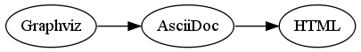
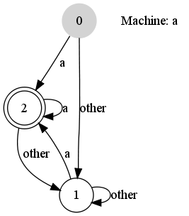
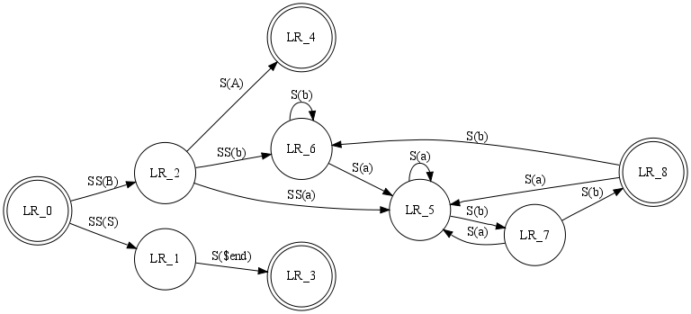

["graphviz", "sample1.png"]
---------------------------------------------------------------------
digraph G { rankdir=LR; Graphviz->AsciiDoc->HTML}
---------------------------------------------------------------------
»Home
»FAQ
»a2x
»API
Graphviz filter for AsciiDoc
Author: Gouichi Iisaka
Version: 1.1.3
Introduction
The Graphviz(http://www.graphviz.org) is a way of representing structural information as diagrams of abstract graphs and networks.
Automatic graph drawing has many important applications in software engineering, database and web design, networking, and in visual interfaces for many other domains.
Graphviz take descriptions of graphs in a simple text language, And has many useful features for concrete diagrams, such as options for colors, fonts, tabular node layouts, line styles, hyperlinks, and custom shapes.
AsciiDoc can external shell commands used to process Paragraph and DelimitedBlock content by Filter.
So now, AsciiDoc can draw graphs via graphviz filter.
Examples
Simple

Using options
["graphviz", "sample2.png"]
---------------------------------------------------------------------
digraph automata_0 {
size ="8.5, 11";
node [shape = circle];
0 [ style = filled, color=lightgrey ];
2 [ shape = doublecircle ];
0 -> 2 [ label = "a " ];
0 -> 1 [ label = "other " ];
1 -> 2 [ label = "a " ];
1 -> 1 [ label = "other " ];
2 -> 2 [ label = "a " ];
2 -> 1 [ label = "other " ];
"Machine: a" [ shape = plaintext ];
}
---------------------------------------------------------------------

Using Layout
["graphviz", "sample3.png", "dot"]
---------------------------------------------------------------------
digraph finite_state_machine {
rankdir=LR;
size="8,5"
node [shape = doublecircle]; LR_0 LR_3 LR_4 LR_8;
node [shape = circle];
LR_0 -> LR_2 [ label = "SS(B)" ];
LR_0 -> LR_1 [ label = "SS(S)" ];
LR_1 -> LR_3 [ label = "S($end)" ];
LR_2 -> LR_6 [ label = "SS(b)" ];
LR_2 -> LR_5 [ label = "SS(a)" ];
LR_2 -> LR_4 [ label = "S(A)" ];
LR_5 -> LR_7 [ label = "S(b)" ];
LR_5 -> LR_5 [ label = "S(a)" ];
LR_6 -> LR_6 [ label = "S(b)" ];
LR_6 -> LR_5 [ label = "S(a)" ];
LR_7 -> LR_8 [ label = "S(b)" ];
LR_7 -> LR_5 [ label = "S(a)" ];
LR_8 -> LR_6 [ label = "S(b)" ];
LR_8 -> LR_5 [ label = "S(a)" ];
}
---------------------------------------------------------------------

Layout
Layout for graphviz as follows. The default is ‘dot’.
- *dot
-
dot draws directed graphs. It works well on DAGs and other graphs that can be drawn as hierarchies. It reads attributed graph files and writes drawings.
- *neato
-
neato draws undirected graphs using ‘‘spring'' models (see Kamada and Kawai, Information Processing Letters 31:1, April 1989). Input files must be formatted in the dot attributed graph language.
- *twopi
-
twopi draws graphs using a radial layout (see G. Wills, Symposium on Graph Drawing GD’97, September, 1997). Basically, one node is chosen as the center and put at the origin. The remaining nodes are placed on a sequence of concentric circles centered about the origin, each a fixed radial distance from the previous circle.
- *circro
-
circo draws graphs using a circular layout (see Six and Tollis, GD '99 and ALENEX '99, and Kaufmann and Wiese, GD '02.) The tool identifies biconnected components and draws the nodes of the component on a circle. The block‐cutpoint tree is then laid out using a recursive radial algorithm. Edge crossings within a circle are minimized by placing as many edges on the circle’s perimeter as possible. In particular, if the component is outerplanar, the component will have a planar layout.
- *fdp
-
fdp draws undirected graphs using a ‘‘spring'' model. It relies on a force‐directed approach in the spirit of Fruchterman and Reingold (cf. Software‐Practice & Experience 21(11), 1991, pp. 1129‐1164).